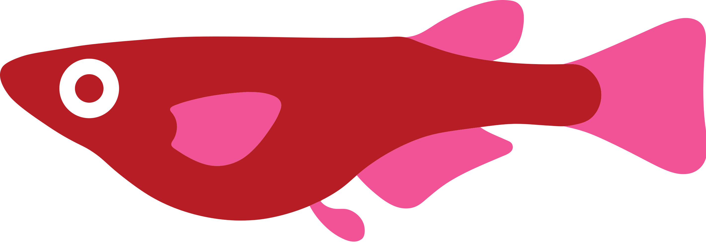

Saul Pierotti
PhD student in bioinformatics and genetics
EMBL‑EBI staff page
Curriculum Vitae
Research interests:
Medaka fish genetics 
Genome-wide association studies
Reproducibility in data science